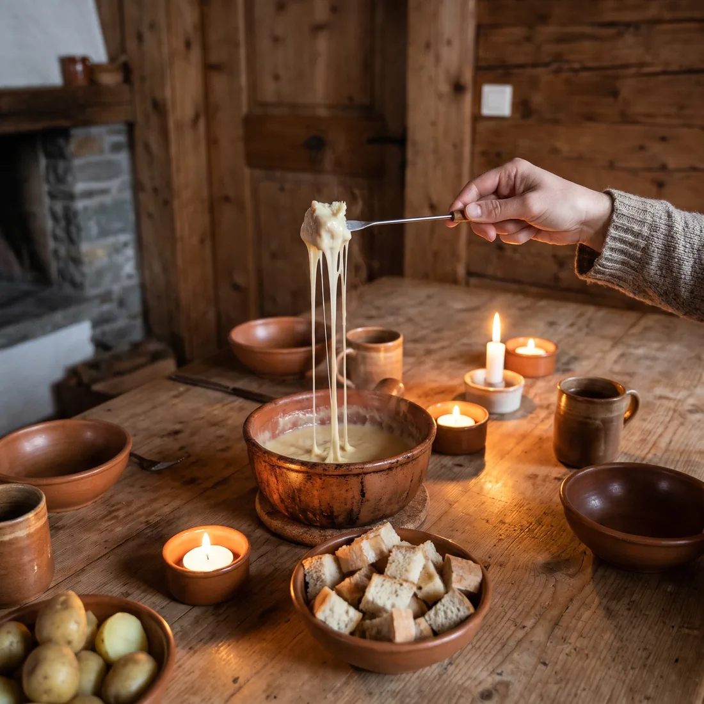
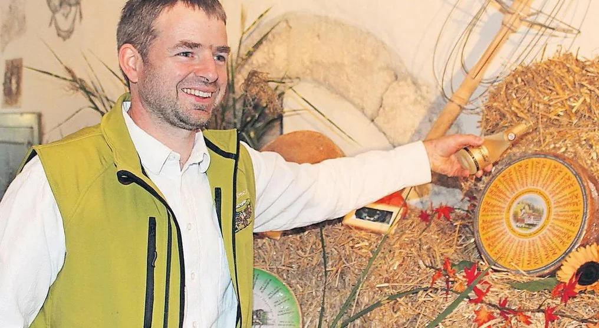
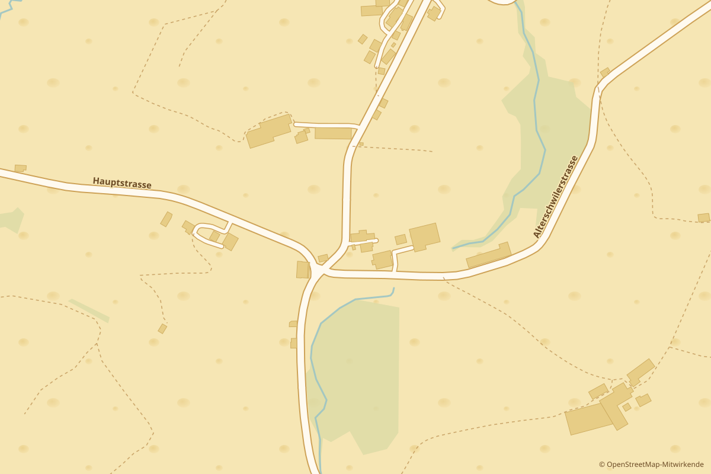

Sehr feine und gute Produkte zu fairen Preisen und für mich immer wieder die Fahrt dorthin wert. Beste Beratung für alles rund um Käse und Milchprodukte.
Tamara L.★★★★★

Stefan und Franziska Jud machen ihren Käse selbst. Und die drei auf dem Bänkli wissen Bescheid.
Gemacht in der Käserei an der Chrüzstrasse – und im eigenen Käsekeller gelagert.
Goldmedaille für unseren Appenzeller
Bronzemedaille 2010
8 Käse machen wir das ganze Jahr, dazu saisonale Spezialitäten. Ziehen Sie die Käseharfe – von jung & mild bis extra reif.


Für Familie, Freunde oder das Team: Fragen Sie im Chäsilädeli – Stefan und Franziska beraten Sie gern.

Stefan und Franziska Jud führen die Käserei Kreuzstrasse in alter Tradition weiter – und erweitern das Angebot laufend mit neuen Ideen und Produkten.
1. November: Stefan und Franziska Jud-Weber übernehmen die Käserei Kreuzstrasse.
Gold am Swiss Cheese Award für den Appenzeller. Im September öffnet das Chäsilädeli direkt in der Käserei.
Bronze am World Championship Cheese Contest.
8 Käsespezialitäten und saisonale Sorten – alle aus der eigenen Käserei.
Sehr feine und gute Produkte zu fairen Preisen und für mich immer wieder die Fahrt dorthin wert. Beste Beratung für alles rund um Käse und Milchprodukte.
Der Käse ist stets ausgesprochen lecker – durfte sogar ein wenig degustieren, denn bei diesem feinen Sortiment kann man nur sagen: wer die Wahl hat, hat die Qual!
Hammer Käse, sehr gute Qualität und sehr schmackhaft. Sehr zu empfehlen!
Leckere Käsesorten. Sehr freundlicher Service. Sie können Käse vor Ort probieren.
Sehr freundliche und kompetente Bedienung, sehr leckere Käse, gute Preise und sehr gute Qualität. Empfehlenswert – gerne wieder 🧀


Wir freuen uns, Sie in unserem kleinen Chäsilädeli begrüssen zu dürfen.